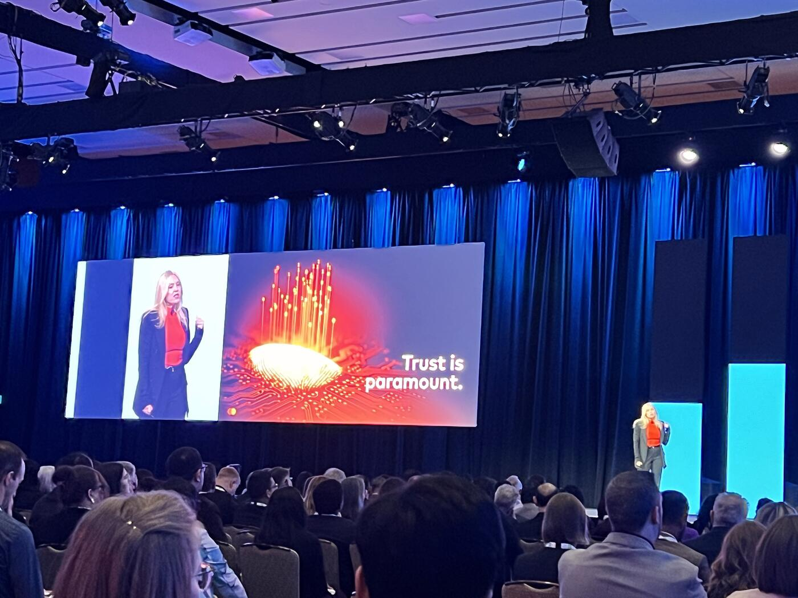
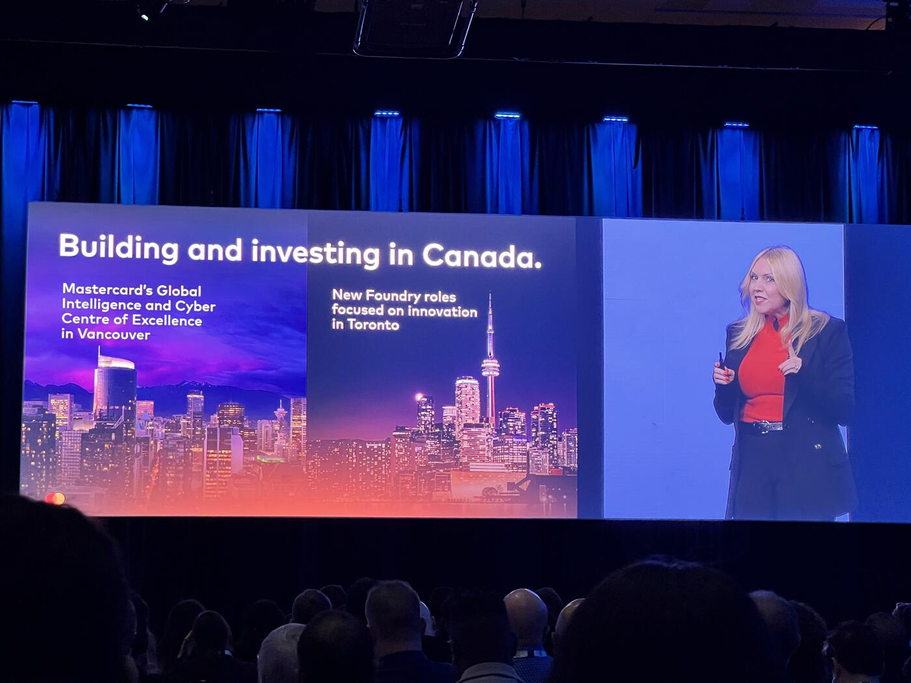

Speed Is Table Stakes. Intelligence Is the Differentiator.
Erin Elofson opened her remarks by framing the current moment in Canadian payments as more than a technology transition. In her view, it is a defining period for Canada's economic and digital future — a moment when infrastructure, intelligence, and trust are becoming deeply interconnected.
"As a proud Canadian, my whole career's been in Canada. I am so, so passionate about this moment."
She described Canada as being "at the center of many of the most important conversations happening right now about infrastructure, trust, and Canada's economic future."
Drawing parallels to earlier technology shifts in cloud computing, AI, data platforms, and social commerce, Elofson argued that the payments industry is entering a familiar cycle. New capabilities create excitement around speed and scale, but real leadership emerges only when systems become intelligent.
"Speed is becoming the baseline, but intelligence is going to be our real differentiator."
Infrastructure ≠ Outcomes

Throughout the keynote, Elofson repeatedly emphasized that infrastructure alone is never enough. Reflecting on the early days of cloud adoption, she recalled how organizations initially focused on reducing costs and increasing speed, only to later confront a deeper question: "We're moving faster, but has the outcome changed?"
The same dynamic, she argued, now applies to payments.
"Every major technology era follows the same arc. You build infrastructure, we optimize for speed and scale. And then if we want outcomes, we make it intelligence."
For Elofson, intelligence in payments means more than layering software onto existing systems. It means creating systems capable of recognizing patterns, learning from behaviour, and making better decisions continuously and at scale.
"Outcomes are not just measured in engagement or efficiency. They're measured in business growth and trust."
She pointed to the evolution of global card networks as evidence. According to Elofson, payments systems did not succeed merely because transactions became faster. Their long-term value came from the intelligence surrounding them — fraud detection, adaptive security, and trust mechanisms that evolved alongside transaction growth.
"Card networks didn't scale simply because transactions moved faster. They scaled because intelligence evolved alongside them — detecting fraud, adapting to new threats, and protecting trust as volumes grew."
To illustrate the distinction between infrastructure and outcomes, Elofson reached for an analogy any policymaker would recognize:
"Building a high-speed highway doesn't guarantee safe or efficient traffic. Outcomes still depend on visibility, monitoring, rules, and how people behave on the road."
Real-Time Payments Amplify Whatever Is Already Happening
As the discussion shifted toward real-time payments, Elofson warned that faster systems also magnify vulnerabilities.
"When systems speed up, they don't just move faster, they amplify whatever is already happening."
Real-time payments create enormous opportunities for businesses and consumers, but they also compress the amount of time available to identify scams, stop fraud, or reverse errors.
"In more traditional environments, suspicious activity can sometimes be paused, reviewed, and reversed. In a real-time system, that window narrows dramatically."
That reality fundamentally changes how trust must operate inside payment systems.
"Detection has to happen during the transaction, not after it. In a real-time environment, trust has to be dynamic, contextual, and continuously learning."
Without intelligent systems capable of interpreting signals and patterns instantly, she argued, speed itself becomes a liability:
"Without intelligence, speed doesn't reduce risk. It simply supercharges it."
The Defining Shift

Elofson then summarized what she sees as the defining shift of the next generation of payments infrastructure:
"Speed is now table stakes. Intelligence is the differentiator, and partnership is how it all scales."
She described Mastercard's role not simply as a payment network, but as a global technology infrastructure connecting institutions, geographies, and markets. According to Elofson, Mastercard's visibility across the ecosystem gives it a unique ability to identify risks, patterns, and opportunities that individual organizations cannot see independently.
"We're connected, and that vantage point really matters."
She pointed to several forces reshaping the industry simultaneously: changing consumer expectations, growing business demands for real-time liquidity management, and the emergence of stablecoins as major structural shifts.
"Businesses are looking for payments to support resilience and help them manage liquidity, cash flow, and decision-making in real time."
She also flagged the increasing importance of stablecoins, noting that Mastercard is "very, very invested in" the space.
Yet even as new forms of digital value emerge, Elofson repeatedly returned to the same core principle: in a real-time world, risk management can no longer remain isolated in back-office systems.
"Risk management is becoming a real-time system capability, in no way a back-office function."
Toward the close of the first half of the keynote, Elofson began discussing the rise of agent-driven systems and autonomous decision-making in payments, suggesting that the next phase of the industry will involve increasingly intelligent and automated financial interactions. Even as technology evolves rapidly, however, her central argument remained consistent: infrastructure creates possibility, but intelligence and trust determine whether that possibility becomes meaningful progress.
Resilience Through Connection, Not Isolation
In the second half of her keynote, Elofson shifted the conversation from intelligence and real-time trust toward the importance of global connectivity and domestic resilience, arguing that national payment strength and international collaboration are not opposing ideas, but deeply connected.
"Strong, domestic systems matter. And they're strongest, though, when they're connected."
Elofson pushed back against the idea that resilience comes from isolation or fragmentation. Instead, she described resilience as the product of interconnected systems that can share visibility, intelligence, and signals across markets and institutions.
"Resilience doesn't come from standing alone or building digital islands. It comes from being deeply connected with the visibility, intelligence, and partnerships needed to lead in a highly interdependent world."
Referencing comments recently made in Toronto by Mastercard CEO Michael Miebach, Elofson argued that periods of global uncertainty actually reinforce the value of connected ecosystems rather than weaken them.
"In moments of volatility, strength doesn't come from retreat, it comes from connection." — Michael Miebach, quoted by Elofson
According to Elofson, the systems that adapt best under stress are not the ones operating independently, but the ones connected to broader flows of intelligence and data.
"The systems that perform best under stress aren't the most isolated. They have access to broader signals, they learn faster, and they adapt in real time."
She framed this as the real advantage of global payment networks: not centralized control, but shared confidence and resilience.
"That is the power of a global network. Not control. The confidence, not dependency, but resilience."
Mastercard's Canadian Footprint
Elofson then turned to Mastercard's footprint in Canada, emphasizing that the company's role extends beyond operating payment rails into building technology, talent, and cybersecurity capabilities domestically.
"This is not just theoretical for us at Mastercard. We do not just operate in Canada, we build here."
She highlighted Mastercard's Global Intelligence and Cyber Center of Excellence, noting that the company has invested:
- $510 million in support of 280+ advanced cybersecurity-related patents
- Approximately 500 people in Canada contributing to Mastercard's global innovation efforts
- $11 million+ in partnership funding with Canadian universities and nonprofit organizations focused on research and talent development
"We've also provided over $11 million in partnership funding with Canadian academia and not-for-profits focused on research and ensuring Canada has the talent for the next generation of Canadian thinkers."
Foundry Expansion: 30 New Roles in Toronto
One of the most notable announcements during the keynote came when Elofson revealed expansion plans for Mastercard's innovation organization in Toronto.
"The Mastercard Foundry, which is our global innovation engine and hub for new product development, is expanding. We are… adding 30 people in Toronto to join the Foundry."
Although she noted the announcement was not yet being formally publicized, she described the expansion as part of Mastercard's broader strategy to develop and scale "intelligence-led capabilities from Canada for the world."
Technology That Strengthens Trust
Throughout the keynote, Elofson repeatedly stressed that the objective is not technology for technology's sake, but building systems that strengthen trust and confidence across the financial ecosystem.
"The goal isn't technology for its own sake. It's to build capabilities that strengthen trust, resilience, and confidence across the payments ecosystem here in Canada and globally."
Despite acknowledging economic uncertainty and broader global pressures, Elofson struck an optimistic tone about Canada's future role in financial technology and payments innovation.
"In a world that feels heavy, I am incredibly proud that we're growing in Canada."
She noted that Mastercard is actively hiring across multiple disciplines and reiterated the company's confidence in the Canadian market. "We are really optimistic about the future, and really optimistic about how Canada will build for the global."
Built Through Partnership
Elofson also emphasized the collaborative nature of the Canadian payments ecosystem, pointing to the relationships between banks, fintechs, public institutions, and private-sector partners.
"The future of payments will be built through partnership and not in isolation."
For Elofson, Canada's opportunity lies in combining its infrastructure, talent base, and institutional trust into a connected ecosystem capable of competing globally.
"Canada has a strong foundation, incredible talent, and the opportunity now really rests with all of us to connect infrastructure, intelligence, and trust in a way that allows the ecosystem, allows Canadians, allows Canadian businesses to grow with great confidence."
She closed with a broader reflection on Mastercard's long-term commitment to Canada and the collaborative nature of the next era of payments innovation.
"The next era of payments in Canada, and globally, will not be built by any one organization or system alone. It will be built together."
Key Takeaways
On intelligence: - "Speed is becoming the baseline, but intelligence is going to be our real differentiator." - Every technology era follows the same arc: infrastructure → speed → outcomes powered by intelligence. - Card networks didn't scale because transactions got faster — they scaled because intelligence (fraud detection, adaptive security, trust) scaled alongside. - Building a high-speed highway doesn't guarantee safe traffic. Outcomes still depend on visibility, monitoring, rules, and behaviour.
On real-time risk: - "When systems speed up, they don't just move faster — they amplify whatever is already happening." - Detection must happen during the transaction, not after. - "Without intelligence, speed doesn't reduce risk. It simply supercharges it." - Risk management is becoming a real-time system capability — "in no way a back-office function."
On the defining shift: - "Speed is now table stakes. Intelligence is the differentiator, and partnership is how it all scales."
On Mastercard in Canada: - $510M cybersecurity investment, 280+ patents, ~500 employees contributing to global innovation, $11M+ in academic/NFP partnerships. - Mastercard Foundry expanding by 30 new roles in Toronto (announcement made on stage, not yet formally publicized). - "This is not just theoretical for us at Mastercard. We do not just operate in Canada, we build here."
On connection vs. isolation: - Resilience doesn't come from "digital islands" — it comes from being deeply connected. - Quote from Mastercard CEO Michael Miebach: "In moments of volatility, strength doesn't come from retreat, it comes from connection."
On Canada's posture: - "In a world that feels heavy, I am incredibly proud that we're growing in Canada." - "The future of payments will be built through partnership and not in isolation." - Mastercard is "very, very invested in" stablecoins.